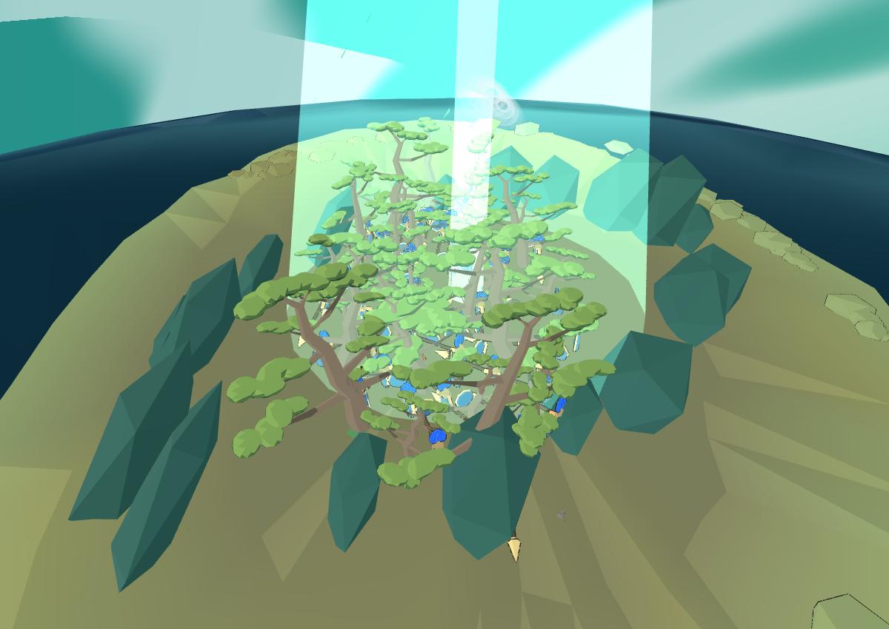
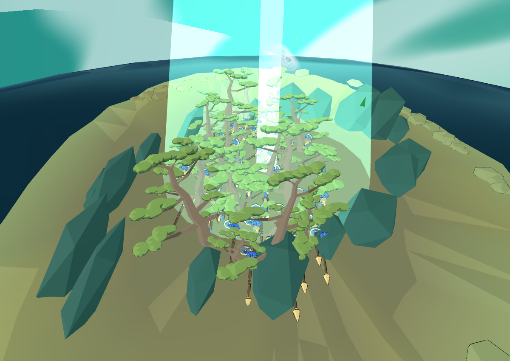

新存档与旧第二章存档共21项通过，代码哈希稳定。使用真实主线R交互和原航船流程，没有直接刷兵。
这是一组诊断控制的位置与时间推进，非自然全程步行。伏击出阵到原地表阵位的运动接续仍未完成，未改Godot。
11项通过 · 两艘原航船 · 50名可见蓝盔 · 进入隐蔽耗时59.37秒

同帧真实DOM面板文字记录
盟军已在松林下埋伏。靠近苔庭信号点，按 R 送出诱敌信号。
10项通过 · 两艘原航船 · 50名可见蓝盔 · 进入隐蔽耗时57.12秒

同帧真实DOM面板文字记录
盟军已在松林下埋伏。靠近苔庭信号点，按 R 送出诱敌信号。
图片为隐蔽帧真实canvas；下方文字来自同帧主线面板记录，并非重制的整页截图。原强扫描束仍在，本轮未扩大美术改动。